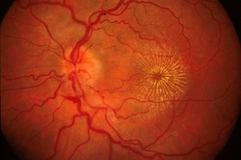

Neuroretinitis
* Định nghĩa:
+ Viêm thần kinh võng mạc

+ Đọc thêm:
Synonyms: Leber’s stellate Neuroretinitis, ODEMS (optic disk edema and macular star)
Definition: Neuroretinitis refers to disk edema and peripapillary or macular star.
Clinical features: This condition usually affects children or young adults. Most cases are unilateral. The incidence is equal in both sexes. Most patients present with acute loss of vision with or without ocular pain. A nonspecific viral illness precedes or accompanies the visual loss.
Presenting visual acuity may be 20/20 to LP. But, most cases are in the 20/40 to 20/200 range. Color vision is affected to a greater degree than visual acuity. Pupillary reaction to light may be sluggish, and the presence of an afferent papillary defect depends on the asymmetry of ocular involvement. Visual field defect usually shows central or cecocentral scotoma. Arcuate, altitudinal or generalized constriction can also occur.
Vitreous cells are present. The disk edema precedes the macular star. Fluorescein angiogram shows leakage of disk vessels. There is no leakage of retinal vessels.
Etiology: Idiopathic or infectious: Cat Scratch Disease CSD (bartonella hensella), lyme, syphilis, toxoplasmosis, toxocarisis, tuberculosis
Evaluation: Titers for CSD, Lyme, Syphilis, Toxoplasmosis, Toxocariasis. MRI to rule out compressive or infiltrative optic nerve disease. We usually perform a spinal tap.
Treatment: Appropriate treatment based on the cause. If no cause is found we do not treat unless the visual loss is bilateral and significant. In these cases we treat with steroids and slowly taper over a few weeks.
Prognosis: Idiopathic neuroretinitis is a benign condition. The disk edema resolves in few weeks but the macular star resolves over months. Neuroretinitis is not a risk factor for multiple sclerosis.
Differential Diagnosis: Optic disk edema and macular star may be seen in:
AION
Hypertensive retinopathy
B/CRVO
Papilledema
Compressive optic neuropathy
Infiltrative optic neuropathy